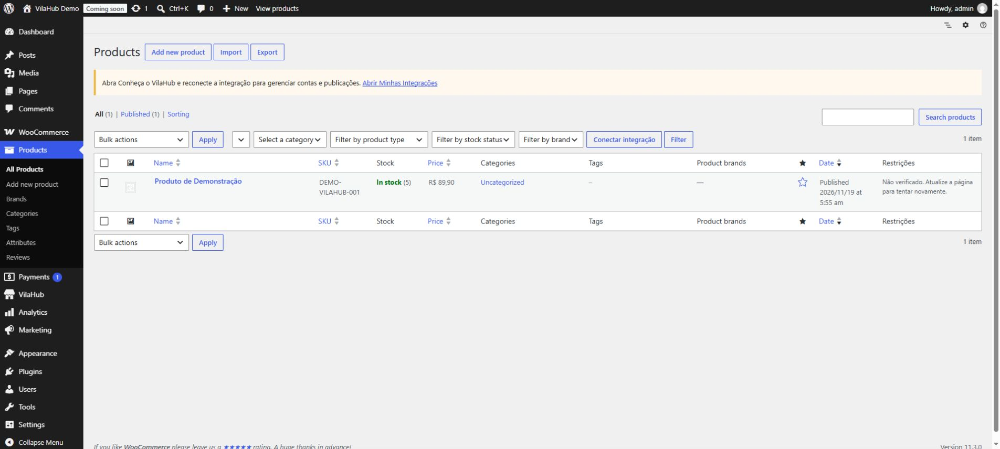

Catálogo na loja
Use produtos, variações, preços e estoque do WooCommerce como ponto de partida.
Mantenha o catálogo na sua loja e use o plugin para revisar produtos, preços e estoque antes de enviar cada item a uma conta de marketplace escolhida explicitamente.

O plugin foi desenhado para lojas que já vendem ou estão prontas para expandir sem reconstruir o catálogo em cada canal.
Use produtos, variações, preços e estoque do WooCommerce como ponto de partida.
Escolha a conta, confira os dados e confirme o envio. A aprovação final é do marketplace.
Consulte pedidos dos canais compatíveis sem misturar com os pedidos nativos da loja.
Defina WooCommerce ou ERP externo como autoridade de estoque para evitar deduções no lugar errado.


O marketplace mantém a decisão final sobre o anúncio. Uma sincronização concluída não significa publicação aprovada.
Abrir no WordPress.orgAdicione o plugin pelo diretório oficial e confirme os requisitos.
Use OAuth e PKCE sem compartilhar a senha do WordPress.
Autorize uma conta compatível com seu plano e operação.
Prepare uma amostra, confira preço e estoque e acompanhe o retorno.
Existem telas para Mercado Livre, Shopee, Magalu, Amazon, TikTok Shop, VilaBrasil, SHEIN, Netshoes, MadeiraMadeira, Americanas/SkyHub e Leroy Merlin. Recursos e disponibilidade variam por conta, plano, aprovação e regras do provedor.
O pacote oficial está disponível para projetos que gerenciam dependências com Composer.
composer config repositories.wpackagist composer https://wpackagist.org
composer require composer/installers
composer require wpackagist-plugin/vilahub-for-woocommerce:^1.0Não. O WooCommerce continua sendo a loja. O plugin conecta a instalação ao serviço VilaHub para as operações de marketplace.
Não para as operações de marketplace. O plugin é um cliente do serviço externo.
Não. O envio exige revisão e confirmação explícita. A aprovação final pertence ao marketplace.
Pedidos de marketplaces ficam em uma tela própria e não viram pedidos nativos do WooCommerce.
Não. Documentos fiscais dependem do canal, da configuração e de uma ação específica de revisão.
Versão 1.0.3, código GPL e suporte pelo fórum oficial do plugin.